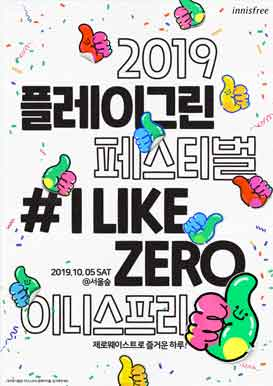
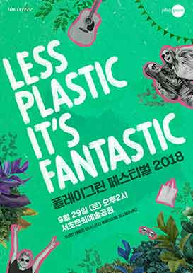
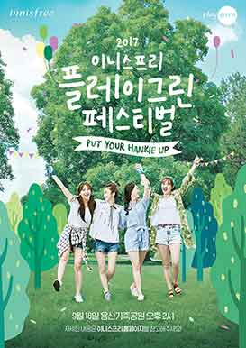
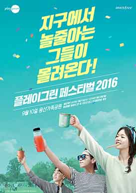
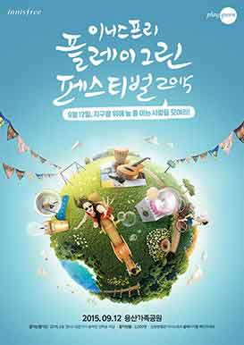
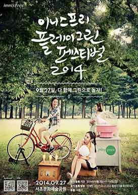

플레이 그린 페스티벌
플레이그린 페스티벌은 1년에 한 번
플레이그리너들이 함께 모여
자연속에서 그린라이프를 즐기는 특별한 축제입니다.
I LIKE ZERO
쓰레기 없이 즐거운 하루!
일상 속 작은 실천으로 시작하는 제로웨이스트(ZERO WASTE)에 주목하여 10월 5일 서울숲에서 열린 2019 플레이그린 페스티벌. 2천 5백여 명의 플레이그리너들과 함께 쓰레기 없이 즐거운 하루를 보냈습니다. 티켓 판매 수익금과 #ILIKEZERO 챌린지 이벤트의 고객 참여로 조성된 기부금은 이니스프리 모음재단을 통해 제주 숲 조성 사업의 기금으로 활용되었습니다.





